|
|
| hard corals text index | photo index |
| Phylum Cnidaria > Class Anthozoa > Subclass Zoantharia/Hexacorallia > Order Scleractinia > Family Lobophylliidae |
| Lobed
brain coral Lobophyllia sp.* Family Lobophylliidae updated Sep 2025 Where seen? This fleshy dome-shaped hard coral with large 'teeth' is commonly seen on many of our Southern shores. Features: Colonies seen about 15-20cm, sometimes much larger. Those seen on the intertidal were hemispherical with rather flat tops. Some have corallites that are branching and trumpet-shaped (phaceloid): long column flaring out at the top to irregular oval shapes (2-5cm in diameter). The branching corallites may be packed closely to one another, or spaced apart. They are arranged with the broad, flared portions facing out so the colony forms an overall spherical shape. Elsewhere, these colonies are reported to reach 5m across or more, some with branches up to 30cm long. In others, the corallites form meandering valleys with separate walls (flabello-meandroid). Corallites walls are thick with large partitions (septa) that have long, prominent 'teeth'. When submerged, the skeleton is covered with thick, fleshy tissue which has bands of 'pimples' (not smooth). Polyp tentacles are only extended at night and the tentacle tips are usually white. It is said that Lobophyllia hemprichii has such long tentacles (5cm) that when extended, the coral may be mistaken for a sea anemone. Colours seen include green, blue, purplish. Mistaken identity Some ring-shaped Brain corals may resemble some species of Trumpet corals (Caulastraea sp.) as both have branching corallites with circular openings. More on how to tell apart hard corals with big rings and fleshy tissue. |
|
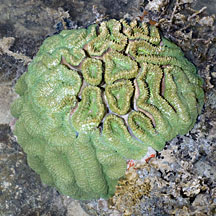 Pulau Semakau, Aug 13 |
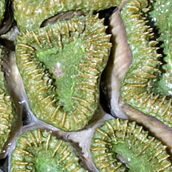 |
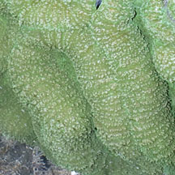 |
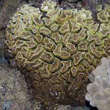 Kusu Island, May 05 Those with smaller circular corallites sometimes mistaken for Trumpet corals. |
|
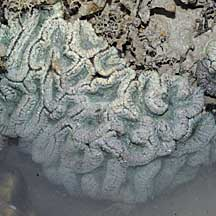 Pulau Hantu, Jan 10 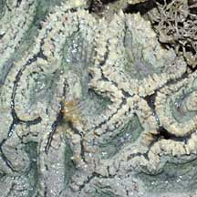 |
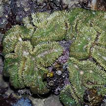 Sisters Island, Jul 04 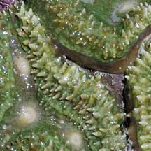 |
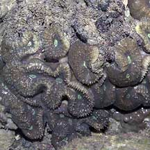 Raffles Lighthouse, Jul 06 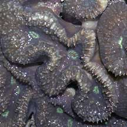 |
*Species are difficult to positively identify without close examination.
On this website, they are grouped by external features for convenience of display.
| Lobed brain corals on Singapore shores |
On wildsingapore
flickr
|
| Other sightings on Singapore shores |
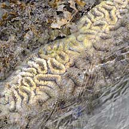 Pulau Berkas, May 10 |
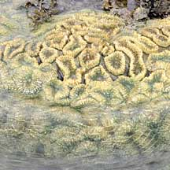 Pulau Berkas, May 10 |
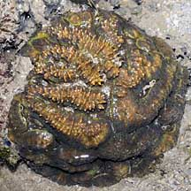 Pulau Pawai, Dec 09 |
|
Links
|